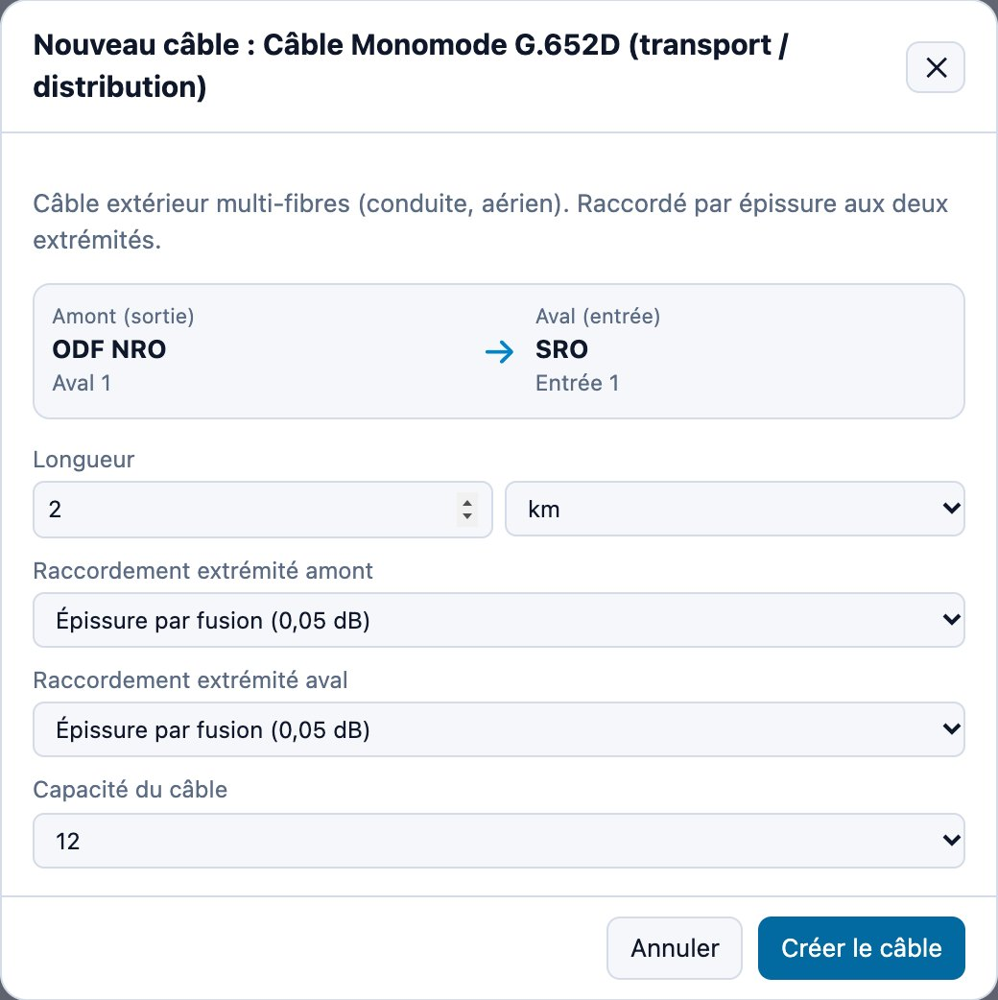
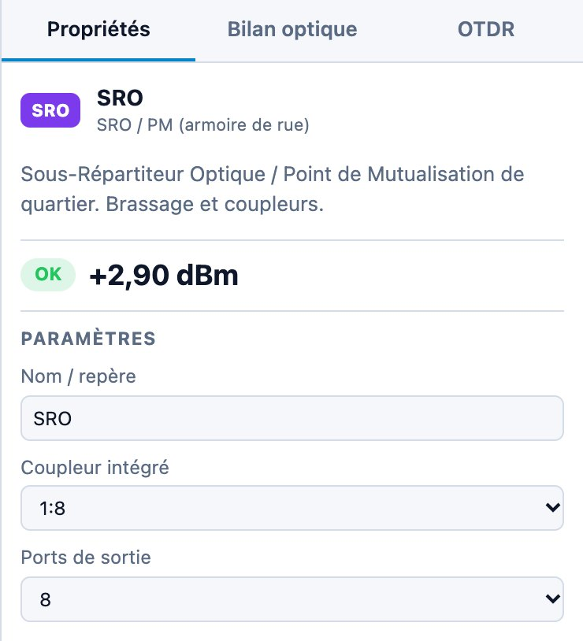
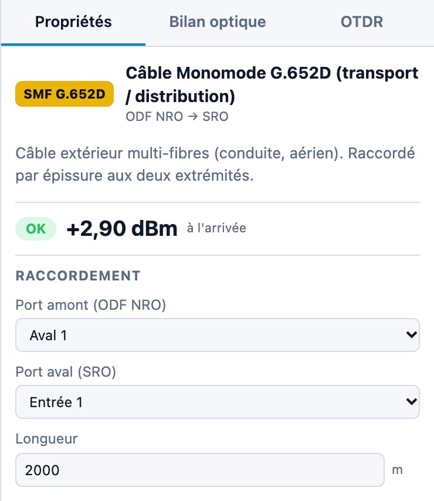
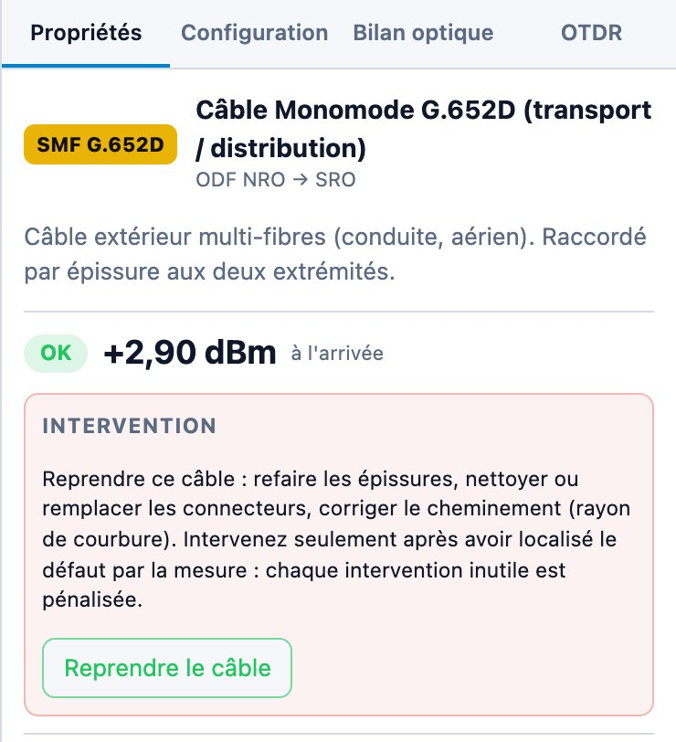

Travaux pratiques complémentaires — TP 6 à 9 et TP 12
Ces TP prolongent les 7 TP intégrés au simulateur. Ils entraînent l'élève à construire seul un réseau, à dimensionner une liaison, à mesurer comme un technicien et à dépanner méthodiquement. Toutes les valeurs des corrigés ont été calculées avec le moteur du simulateur.
Dépannage des services : pannes de configuration sur sujet
Avancé
1 h 30
Exemple « FTTH triple play configuré » puis sujet de l'enseignant
Prérequis : livret de tutoriels (fichier tutoriels-imprimables.html), au moins les tutoriels 1 à 6 ; tutoriels 11 et 12 pour le TP 12 (après le TP intégré 10).
Nom : ....................................... Prénom : ....................................... Classe : ........ Date : ............
Situation professionnelle : votre entreprise doit raccorder un nouvel abonné. Le NRO, le SRO et la PTO sont posés mais rien n'est câblé. Vous devez réaliser le câblage complet, calculer le bilan optique puis le vérifier par la mesure.
Objectifs : placer et régler des équipements · câbler dans le sens amont → aval · calculer un bilan et une marge · mesurer au photomètre · sauvegarder son travail.
Partie A — Construction (20 min)
Cliquez sur Nouveau. Placez de gauche à droite : OLT, ODF, SRO / PM, PTO, ONT. Nommez-les « OLT NRO », « ODF NRO », « SRO », « PTO Client », « ONT Client ».
Réalisez le câblage ci-dessous. Pour chaque câble, choisissez l'outil dans Câbles & jarretières, cliquez sur l'équipement amont puis sur l'équipement aval, et remplissez la fenêtre comme ci-contre.

Exemple : le câble G.652D ODF → SRO (2 km, fusion aux deux extrémités).
OLT NROjarretière 2 m SC/APCODF NROG.652D 2 km · fusion / fusionSRO 1:8drop 80 m · fusion / fusionPTO Clientjarretière 2 m SC/APCONT Client
Ajoutez un routeur Wi-Fi relié à l'ONT, puis un PC relié au routeur, en câble Ethernet Cat6 (5 m).
Vérifiez que tous les badges sont verts et que l'ONT affiche ses voyants Power et PON.
TP 7 — Ingénierie : coupleur, distance et longueur d'onde
IntermédiaireDurée : 1 h 30Point de départ : votre fichier du TP 6 (Ouvrir)
Nom : ....................................... Prénom : ....................................... Classe : ........ Date : ............
Situation professionnelle : le bureau d'études vous demande jusqu'où l'on peut raccorder des abonnés selon le taux de couplage choisi au SRO, et quelles erreurs d'installation dégradent le plus la liaison.
Partie A — Influence du coupleur et de la distance
Modifiez le coupleur du SRO (Propriétés) et la longueur du câble G.652D (sélectionner le câble). Pour chaque cas, relevez la puissance reçue par l'ONT (en dBm).
Coupleur au SRO
2 km
10 km
20 km
1:8 (10,5 dB)
1:16 (13,8 dB)
1:32 (17,2 dB)
1:64 (21,0 dB)
A1. De combien de dB la puissance baisse-t-elle quand on passe de 2 à 10 km ? Justifiez par le calcul.
A2. Pourquoi un opérateur choisit-il malgré tout des coupleurs 1:32 ou 1:64 ?
A3. Avec un coupleur 1:64, quelle est la longueur maximale du câble de transport pour garder une marge d'au moins 3 dB (P ≥ −24 dBm) ? Calculez, puis vérifiez dans le simulateur.
Partie B — Influence de la longueur d'onde
Remettez 1:8 et 2 km. Changez la longueur d'onde de l'OLT et relevez la puissance reçue :
λ
1310 nm
1490 nm
1550 nm
P reçue (dBm)
B1. Quelle longueur d'onde est la moins atténuée ? Pourquoi l'écart est-il faible ici ?
Remettez 1490 nm. Sélectionnez le SRO et passez son Coupleur intégré sur « none » (aucun coupleur), comme sur la capture ci-contre. C'est aussi là que vous avez changé le coupleur dans la partie A.
C1. Puissance reçue et statut de l'ONT ? Expliquez.
C2. Proposez une solution technique. Remettez ensuite 1:8.

Propriétés du SRO : le champ « Coupleur intégré ».
Partie D — Erreurs d'installation
Sélectionnez la jarretière PTO → ONT et passez ses connecteurs en SC/UPC. Relevez la puissance et lisez l'avertissement. Remettez SC/APC.
Sélectionnez le câble G.652D et changez son port amont sur l'ODF (Aval 2 au lieu de Aval 1), dans la section Raccordement de l'inspecteur (capture ci-contre). Observez. Remettez le port 1.
Passez le câble Cat6 routeur → PC à 120 m. Observez. Remettez 5 m.

Inspecteur du câble G.652D : choix des ports amont et aval.
IntermédiaireDurée : 1 h 30Point de départ :Exemples & TP → TP 3 → Charger la correction (câblage complet)
Nom : ....................................... Prénom : ....................................... Classe : ........ Date : ............
Situation professionnelle : la Résidence Les Érables (R+3) vient d'être raccordée. Avant la mise en service, vous réalisez la recette : mesures de puissance à chaque point, tir OTDR et contrôle de continuité au VFL. Vos relevés seront joints au dossier de recette.
Point de départ : Exemples & TP → TP 3 → « Charger la correction (câblage complet) ».
Partie A — Relevés au photomètre (λ = 1490 nm)
Mode Mesure / Test → Photomètre. Mesurez la puissance reçue par chaque équipement de la branche de l'appartement 101 :
Point
ODF NRO
PMI sous-sol
PBO étage 1
PTO Appt 101
ONT Appt 101
P (dBm)
Perte du tronçon précédent (dB)
—
A1. Quel tronçon a la plus forte perte ? Quel élément en est responsable ?
A2. Mesurez aussi les ONT des appartements 201 et 301. Pourquoi trouve-t-on presque la même valeur aux 3 étages ?
AvancéDurée : 2 hPoint de départ : sujet de l'enseignant (réseau du TP 6)Organisation : binôme : l'un mesure, l'autre remplit la fiche ; rôles inversés à chaque panne
Élève A : ....................................... Élève B : ....................................... Classe : ........ Date : ............
Situation professionnelle : un abonné appelle le support : « Internet ne marche plus » ou « la connexion est lente ». Vous intervenez comme technicien de maintenance. Vous ne savez pas où se trouve le défaut : vous ne disposez que de vos instruments.
Règles du jeu
Ouvrir le sujet sujet-….json fourni par l'enseignant et lire les consignes. Le réseau est verrouillé ; les pannes sont cachées.
Dépanner uniquement avec les instruments (photomètre, OTDR, VFL, voyants, bilan) et remplir la fiche (lignes 1 à 6) avant toute intervention.
Mode Dépannage : sélectionner l'élément diagnostiqué, puis Reprendre le câble ou Nettoyer / remplacer.
Re-mesurer (ligne 7). Si la mesure n'est pas revenue à la référence, le diagnostic était faux : reprendre à la ligne 2. Chaque intervention inutile est pénalisée.
Quand toutes les liaisons sont conformes : Rendre ma copie. L'enseignant reçoit le journal de vos mesures et interventions.

Mode « Dépannage » : intervention sur un câble.
Pendant le sujet : temps restant, Consignes et Rendre ma copie.
Valeurs de référence (réseau sain du TP 6) : ODF 4,00 dBm · SRO 2,90 dBm · PTO −8,22 dBm · ONT −8,72 dBm. OTDR 1310 nm : fin de fibre à 2 584 m, coupleur à 2 502 m.
AvancéDurée : 1 h 30Point de départ : exemple « FTTH triple play configuré », puis sujet de l'enseignantOrganisation : seul ou en binôme
Élève A : ....................................... Élève B : ....................................... Classe : ........ Date : ............
Situation professionnelle : la fibre de la Maison Dupont est en bon état, mais l'abonné appelle le support : « la TV ne marche plus », ou « plus rien ne marche depuis hier ». Un réglage a été modifié quelque part entre le routeur de collecte et les appareils. Vous intervenez comme technicien du support : à vous de trouver l'erreur de configuration et de la corriger.
Partie A — Relevé de référence (réseau sain)
Chargez l'exemple, onglet Configuration. Notez les valeurs du réseau qui fonctionne : elles vous serviront de point de comparaison.
Valeur
Relevé
Puissance reçue par l'ONT Dupont
.......... dBm
Numéro de série de l'ONT · profil déclaré sur l'OLT
Ouvrir le sujet sujet-….json donné par l'enseignant (une panne de configuration cachée par sujet, ou plusieurs).
Dépanner avec le diagnostic des appareils et en lisant les configurations ; comparer avec le relevé de la partie A. Remplir la fiche avant de modifier un réglage.
Corriger la valeur dans l'onglet Configuration, puis vérifier que les services reviennent. Le message « Panne de configuration corrigée… Bravo ! » confirme si l'enseignant l'a prévu.
À la fin : Rendre ma copie (journal de vos diagnostics et réglages).
Méthode : 1. quels appareils sont en défaut (un seul service ou tous) ? 2. quelle étape du diagnostic ? 3. quels équipements interviennent à cette étape ? 4. comparer leurs réglages avec le relevé de référence.